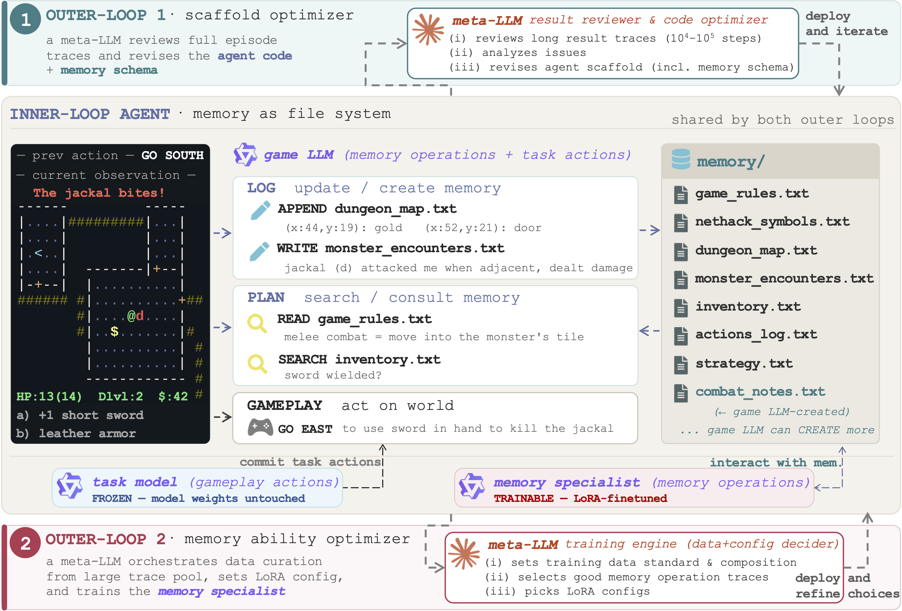

Agent Memory: The Methods, Step by Step
Each chapter starts with one small example, followed in order. Read that first. The code, equations, variants, and sources are under a closed “implementation details” section at the end.
The examples are invented to explain the methods, not reported experimental results.
Our implementation focus: Codex cross-session memory follows session extraction, consolidation, abstractions/skills, and search/retrieval. It is separate from Codex compaction.
Other starting points: ReasoningBank shows how an attempt becomes a lesson. Then Memex shows how evidence leaves and re-enters the active context.
Use past experience on a new task
-
Codex cross-session memory — per-session evidence becomes a shared handbook and skills, retrieved through an injected index and text search.
-
ReasoningBank — a failed product search becomes advice for the next search.
- ACE — a bad calculation leads to a new checklist rule.
- MemRL — task outcomes change which advice gets selected.
Preserve useful information while working
- ShadowFrog — the coding agent leaves a discovery beside its source file.
- Claude-Mem — an observer turns tool results into searchable notes.
- Compaction — a shorter handoff replaces the long active conversation.
- Memex — save evidence, keep its address, reopen it later.
- PRO-LONG — a program reads the relevant parts of a long log.
Learn how to operate memory
- MemAgent — carry one replacement note through successive document chunks.
- AgentFold — fold selected completed steps into a summary.
- ContextPilot — save a fact before removing its bulky source message.
- AutoMem — improve the notebook workflow, then train its operator.
Store information inside the model's attention cache
- Cartridges — fit numerical memory for one corpus and reuse it.
- Still — use a trained function to shrink a new context's cache.
These are different mechanisms, not interchangeable names for summarization. Every chapter says what information the writer sees and what survives into the next call or task.
Broader survey · Questions about feedback
The earlier detailed comparison is retained below.
Open implementation details, training, and sources
The question for this tutorial is: could you execute one cycle of the method yourself, and say exactly what changed? For each selected method, we follow its inputs, memory object, writes, reads, and next model call. Training is explained separately from deployment. The examples use invented tasks and values to make the published mechanisms concrete; they are not experimental results.
The engineering systems—Codex cross-session memory, Codex compaction, ShadowFrog, and Claude-Mem—are labeled as systems, not papers. This page covers 15 selections in the reading edition, not all 33 entries in the broader survey.
Implementation chapters — start here
Each method now has a separate chapter. Follow its numbered implementation steps and worked trace; use the shorter sections farther down this page only as a comparison reference.
Dedicated Codex memory deep dive →: extractor inputs/outputs, consolidation agent and file hierarchy, abstraction/skills, text retrieval, V1/V2 differences, and benchmark-port boundaries.
| Chapter | What you should be able to implement after reading |
|---|---|
| 1. ReasoningBank | Query embeddings → prior experience → solver → judge → extracted lessons → append |
| 2. ACE | Generator/Reflector/Curator calls, retry branches, stable IDs, counters, and delta application |
| 3. MemRL | Candidate filtering, normalized ranking, selected-ID reward updates, and builder variants |
| 4. ShadowFrog | File/symbol-addressed notes, pre-edit lookup, verification, and cross-reference maintenance |
| 5. Claude-Mem | Event capture, observer XML, asynchronous storage, search → timeline → detail/raw reads |
| 6. Codex compaction | Active-window replacement and intact opaque-item continuation through the API |
| 7. Memex / MemexRL | Indexed archival, anchor extraction, compression/read tools, and segmented RL |
| 8. PRO-LONG | Raw logging, programmatic evidence reads, action-file parsing, and environment execution |
| 9. MemAgent | Chunk-by-chunk memory overwrite, final answer call, and Multi-Conv DAPO |
| 10. AgentFold | Fold directives, whole-block range replacement, next-step construction, and SFT pairs |
| 11. ContextPilot | Memory/edit tool schemas, source recovery, branch selection, and snapshot-level RL credit |
| 12. AutoMem | LOG/PLAN file operations, two-model handoff, scaffold evolution, and specialist training |
| 13. Cartridges | Self-study data, trainable KV prefixes, shifted distillation loss, and query-cache reset |
| 14. Still | Per-layer compactor shapes/attention, RoPE handling, logical positions, and training |
For our first implementation: start with the dedicated Codex memory tutorial. Use ReasoningBank, ACE, ShadowFrog, Claude-Mem, and Memex as comparisons. They expose the concrete choices we need to make about the writer, reader, feedback, and context replacement. The later chapters explain what additional training or model-internal access would require.
The code examples implement the small deterministic operations where possible. Model/API adapters and unreleased internals are explicitly identified. “Teaching representation” means a readable reconstruction; a linked pinned schema/prompt remains the reference for a faithful port. No model-training or benchmark-performance run is claimed by this tutorial.
Short-overview navigation
- Experience reused across tasks: 1. ReasoningBank → 2. ACE → 3. MemRL.
- Practical stores and context control: 4. ShadowFrog → 5. Claude-Mem → 6. Codex compaction → 7. Memex / MemexRL → 8. PRO-LONG.
- Learned memory operations: 9. MemAgent → 10. AgentFold → 11. ContextPilot → 12. AutoMem.
- Memory as model state: 13. Cartridges → 14. Still.
- Feedback: who sees the answer, and when? · What changes if we adapt a method?
For the planned first implementation, start with Codex cross-session memory. Then read the training sections before deciding whether we need a frozen-model design or a learned policy.
How to read: use the implementation chapters above for the exact call and state transitions. The compact sections below preserve the earlier comparison and anchors. A paper algorithm and a released implementation can differ; each chapter identifies its chosen target.
Four training terms: frozen means the model's weights are unchanged; supervised fine-tuning (SFT) learns to imitate target outputs; reinforcement learning (RL) uses outcome rewards to change which outputs the policy favors; distillation matches a teacher's behavior. None is synonymous with appending a runtime note.
Two lifetimes remain separate throughout: within-task memory preserves an unfinished investigation; across-task memory lets a completed attempt help a different, separately scored task. A session restart does not necessarily start a new task. Across-task experiments need not use short or independent tasks.
1. ReasoningBank: retrieve an experience, solve, judge, extract lessons
Read the full implementation chapter →
Memory object. A stored experience associates a past task with reusable memory items. Each item has a title, a short description, and detailed content. The retrieval key is the past task/query; the injected payload is its lessons. This is a bank of experiences, not one repeatedly rewritten global summary.
Execute one task
- Embed the new task query and compare it with stored query embeddings. Select the top matching experience(s); the paper's basic setting retrieves one.
- Put the retrieved memory items into the solver's instructions. The solver then performs its ordinary action–observation loop.
- Once the attempt ends, ask an LLM judge whether the task succeeded, using the task and recorded attempt. In the paper's self-evolving setting, this judge does not receive a reference answer.
- Select the success-extraction or failure-extraction prompt according to that judgment. The extractor reads the task and trajectory and produces at most three nonredundant lessons in the title/description/content format.
- Append the new experience and its retrieval key to the bank. Task B can retrieve it; the baseline does not retroactively repair task A or globally rewrite the bank. Paper, §§3–4 · Retrieval implementation · Extraction prompts
Worked example: what is actually saved?
Task A asks an agent to find a product satisfying several constraints. It selects the first search result but never checks one required attribute. The judge labels the attempt unsuccessful. An illustrative memory item is:
{
"title": "Check every constraint before selecting a result",
"description": "Search relevance does not establish eligibility.",
"content": "List the required attributes; inspect the candidate's detail page; record evidence for each attribute; reject candidates with an unresolved requirement."
}
On a later product-search task, similarity retrieval supplies that procedure. The solver still has to inspect the new product. The memory is a generalized procedure, not the earlier product name or a copied answer.
bank = previous experiences
for task in task_stream:
neighbors = retrieve_by_task_embedding(task, bank)
trajectory = solve(task, lessons(neighbors))
judgment = self_judge(task, trajectory)
prompt = success_prompt if judgment.success else failure_prompt
items = extract(prompt, task, trajectory) # at most three
bank.append(experience(task, items))
This is explanatory pseudocode, not a literal repository API.
Carry-forward: the bank survives between tasks in the learning stream. A new task retrieves lessons, not the entire previous conversation. An empty bank simply supplies no past lessons.
Writer feedback. The extractor learns the judge's success/failure assessment, which can itself be wrong. The inspected code can also append the judge's explanation. Importantly, the code offers both an autoeval criterion and a ground-truth reward criterion; selecting the latter changes the feedback condition. “ReasoningBank uses no gold” describes the paper's self-judged procedure, not every available code configuration. Extraction and criterion switch
Optional variant, not the baseline: MaTTS spends additional inference on parallel attempts or sequential refinement and uses the extra evidence for memory extraction. Do not silently include that extra solve budget in a single-attempt comparison. Paper
2. ACE: generate, reflect, and apply a small playbook delta
Read the full implementation chapter →
Memory object. A playbook of ID-addressed bullets: strategies, domain facts, and pitfalls, with helpful/harmful usage metadata. The Generator receives the playbook as context. The important difference from ReasoningBank is the maintenance operation: propose a local delta to a persistent playbook instead of appending an independent experience or regenerating the entire document.
Execute one update
- Generator: read the question and current playbook; produce an attempted solution and identify the bullets it used.
- Reflector: inspect the question, attempted solution, used bullets, and permitted feedback. Diagnose the error or useful strategy, and tag used bullets as helpful, harmful, or neutral.
- Curator: read the reflection and existing playbook. Propose small structured operations rather than returning a replacement playbook.
- Deterministic application: validate the operations, assign new IDs, and merge the accepted additions into the appropriate sections. Update the usage metadata for existing bullets.
- Refinement: the paper's grow-and-refine mechanism checks semantic overlap to limit redundant entries. Continue with the revised playbook on the next example; offline adaptation can make multiple passes. Paper, §3 · Reflector inputs · Curator and operation validation
Worked example: a delta, not a new essay
Suppose an existing bullet says to extract the two reported financial figures before calculating growth. The Generator uses it, but compares a quarterly figure with an annual one. The Reflector identifies the period mismatch. A Curator addition can have this actual operation shape:
{
"reasoning": "The attempted comparison mixed reporting periods.",
"operations": [
{
"type": "ADD",
"section": "Calculation checks",
"content": "Before calculating growth, verify that both values cover comparable reporting periods and use the same units."
}
]
}
The parser expects the outer reasoning and operations fields; the object inside the array is one delta. The application layer gives the new bullet an ID. Existing unrelated bullets stay unchanged. On task B the playbook includes both the extraction advice and the new period check. The example section name and content are illustrative.
Carry-forward: the playbook, IDs, and usage metadata survive the adaptation stream. Task B gets the revised playbook, not task A's complete conversation.
What is learned? Textual instructions and metadata change; this procedure does not require gradient updates to the Generator. The paper's full playbook injection is also not the same as retrieving three bullets through our own search policy.
Writer feedback. In the inspected Reflector, use_ground_truth selects whether an available reference answer enters its prompt. Both prompt paths can receive environment_feedback. In the pinned adaptation loop, that feedback can contain a correctness message computed against the target even when target text is hidden. The loop can also retry the same example and generate again after curation. Record the initial score separately from those feedback-assisted results. Exact call sequence
Paper/code boundary. The checked Curator explicitly states that only ADD operations are fully supported. Although its comments mention UPDATE/MERGE/DELETE, that is not evidence of a complete arbitrary-edit implementation. Preserve the paper's distinction between delta generation and refinement; do not invent a working delete API. Pinned Curator
3. MemRL: retrieve by relevance, learn usefulness from reward
Read the full implementation chapter →
Memory object. A triplet \((z_i,e_i,Q_i)\): an intent/query representation, an experience, and a learned scalar utility. The LLM remains frozen. “RL” here primarily changes the values used to choose memories, not the model's parameters.
Paper algorithm
- Embed the current intent. Recall up to \(k_1\) experiences above a cosine-similarity threshold. If none qualify, solve without retrieved memory.
- Within that candidate set, combine normalized similarity and normalized utility, then select \(k_2\) items for the prompt.
- Solve with the selected experiences and obtain environmental reward.
- Update the utility of each memory actually injected into the prompt.
- Summarize the new attempt and add a new intent–experience–utility triplet. Paper, §4
The paper's selection and terminal utility updates are:
Hats denote z-score normalization within candidates; \(\lambda\) trades off relevance and utility; \(\alpha\) controls the update size; \(r\) is the observed reward.
Worked example: which number changes?
Use illustrative settings: similarity threshold \(0.5\), \(k_1=2\), \(k_2=1\), and \(\lambda=0.75\).
| Stored experience | Similarity | Utility \(Q\) | Passes similarity gate? |
|---|---|---|---|
| A: navigation shortcut | 0.90 | 0.00 | Yes |
| B: check destination before moving | 0.70 | 0.40 | Yes |
| C: unrelated but previously useful | 0.30 | 0.90 | No |
Only A and B enter normalization. Using population standard deviations for this toy calculation, their normalized similarities are \(+1,-1\), and normalized utilities are \(-1,+1\). Therefore:
score(A) = 0.25 × (+1) + 0.75 × (-1) = -0.50
score(B) = 0.25 × (-1) + 0.75 × (+1) = +0.50
B wins despite being less similar. C cannot win through high utility because it failed the first gate. The solver receives B's experience text, not merely the number 0.50. The normalization convention here makes the arithmetic transparent; production code must define its behavior for ties and zero variance.
For an illustrative \(\alpha=0.2\), \(Q=0.4\), and success reward \(r=1\):
before: experience B, utility 0.400
after: experience B, utility 0.400 + 0.2 × (1 - 0.400) = 0.520
If the next use fails with reward \(-1\), its value becomes \(0.216\). The words of experience B need not change. A separate write stores the new attempt under its own intent, with a fresh initial utility—not B's updated value. Both memories would be credited if both had been injected; this is not a causal test proving which one helped.
Carry-forward: the experience bank and learned utilities persist into later tasks. Clearing them after every task removes the cross-task learning being tested.
The released code is a variant, not Eq. 7 verbatim
The inspected ValueAwareSelector sorts candidates by Q, uses similarity as a tie-breaker, and supports epsilon-greedy exploration. It is not the paper's normalized weighted-score implementation. Its updater supports a discounted target, with \(\gamma=0\) as the single-step default. A reproduction must choose and label one of these selection rules. Selector and updater
Writer feedback, concretely. In the inspected ALFWorld runner, success flags update retrieved memories' utilities and are also passed to the memory-update layer. A vanilla builder stores a trajectory, a generated script, or both; a validation updater writes only successes; an adjustment updater can explicitly tell a reflector that a trajectory failed. The builder interface has no separate gold-answer argument. This establishes those code paths, not the contents of every other benchmark's trajectory. Runner · Updater variants · Memory builders
4. ShadowFrog: the solver writes discoveries at code addresses
Read the full implementation chapter →
System, not a paper. Memory object: Markdown under .shadow/, mirroring source files and symbol headings. A discovery includes a verification status and provenance. This is a project notebook, not a new model context window.
Execute the write/read cycle
- Initialize shadow files and symbol headings from the repository. This creates addresses, not findings.
- Before working on a file, the solver consults relevant existing shadows and project-level notes.
- During ordinary investigation, the solver discovers something worth retaining and writes it under the appropriate file/symbol. It distinguishes verified, uncertain, and refuted claims, and records whether information came from exploration, user input, or interaction.
- For knowledge involving two files, add cross-references. For findings spanning three or more files, use a
_cross/entry and back-pointers from affected files. - At a later session/edit, hooks advertise the store and surface a small target-file snippet. The solver reads or searches the full notes as needed.
- When code changes, inspect and refresh affected discoveries; consolidation handles duplicated or conflicting notes. Writing instructions · Update and placement rules
Worked example
Before: .shadow/src/cache.py.md has a heading for make_key, but no behavioral discovery.
Observed evidence: reading the implementation and running a two-tenant test shows that tenant identity is omitted.
After: the solver adds a discovery under make_key describing the missing field, the observed collision, verification status, and the relevant test file. Later, an edit to src/cache.py makes the pre-edit hook point the solver toward that note. At the inspected pin, the rich snippet is limited to three discoveries and 600 characters; full details require reading the file. Pre-edit hook
What does not happen: there is no mandatory observer writing after every tool call, and no built-in “flush notes, evict history, resume” controller in these hooks. The same solver chooses and writes the discovery. Optional exploratory “dream” work is additional activity, not a free consequence of storing notes. Hook registrations · Overview
Writer feedback. The writer sees what the solver observed, including tests and user corrections. “Verified” is a claim about evidence the agent checked; it does not mean a hidden benchmark evaluator certified the final solution.
5. Claude-Mem: a separate observer turns tool events into searchable records
Read the full implementation chapter →
System, not a paper. Memory object: structured observations and session summaries in a database, plus search indexes and best-effort raw tool I/O. The observer is a different model call from the solver.
Follow one event through the system
- The solver runs a tool. A hook captures permitted tool metadata, input, and result and sends the event to the worker. Filtering can exclude events.
- An observer processes the supplied event stream. It is instructed to record useful discoveries, fixes, changes, and similar findings, and skip routine activity. It cannot investigate the environment itself.
- It emits structured observations: type, title, subtitle, facts, narrative, concepts, and files read/modified. Progress-summary calls separately record the request, investigation, learning, completed work, next steps, and notes.
- Parsed records are persisted; search indexing proceeds asynchronously.
- A future solver receives a bounded recent-memory context and can search for more. The intended read sequence is search index → timeline/context → selected observation details. Raw tool I/O can be fetched by relevant IDs when available. Observer/summary schema · Processing and persistence · Search routing
Worked example: the observer's input is not the solver's whole mind
A captured test result says that the two-tenant cache test failed. A later captured edit adds tenant identity, and another test event passes. The observer can create a bugfix observation whose facts describe the key change and passing test.
On a later cache task:
search("tenant cache") -> short results with observation IDs
timeline(selected ID) -> surrounding events
get_observations([selected ID]) -> full structured note
get_tool_uses(relevant IDs) -> captured evidence, if available
The query and IDs are illustrative; this shows the staged read policy. Reading every full observation immediately would defeat its token-budget purpose.
State transition. A new database record is added; the solver's active conversation is not thereby replaced. Raw evidence is not guaranteed complete: capture can filter, fail, or truncate. The inspected implementation caps each raw input/result field at 64 KiB.
Writer feedback. A captured failing or passing test is visible feedback. An evaluator score never sent through the supplied events is not. The observer has no independent answer-key channel.
Timing matters. Ingestion acknowledgment can precede observation completion and searchable indexing. Before a deliberate reset, “event accepted” is weaker than “the memory I will need is stored and retrievable.” An explicit readiness barrier would be an experimental addition. Asynchronous ingestion
6. Codex compaction: replace the model's active history
Read the full implementation chapter →
System, not a paper. Unlike the two notebooks above, compaction changes what the next model call receives. Distinguish the readable source-code path from provider-native opaque compaction.
A. Readable, client-orchestrated path
- Start from an ongoing conversation: task, user messages, assistant actions, and tool results.
- Trigger a separate model call with the handoff-summary instruction and available history.
- Collect selected real-user messages from the old history under the retention budget. At the inspected source pin, this selection uses an approximately 20K-token budget.
- Build a replacement history from those messages and the generated summary, with the code's initial-context handling.
- Continue the task using that replacement. The original raw tool transcript is not generally retained as a recent-tail guarantee. Pinned compaction implementation · Handoff prompt
Worked example. Before: a long cache-debugging transcript. After: retained user requirements plus a handoff saying that tenant identity was missing, the key has been changed, the targeted test passed, and the broader suite remains unrun. The next call can continue testing. If the handoff omits the exact failing fixture, this mechanism alone provides no stable-ID fetch operation to recover it.
B. Provider-native path
For standalone API compaction: submit the current conversation while it still fits; receive the provider's compacted output containing opaque state and any retained items; use that returned output as the input window for continuation. Preserve the returned items instead of replacing them with your own prose. Automatic server-side compaction is a separate integration that uses a configured threshold. Official compaction guide
Writer feedback. Both paths operate on supplied conversation state. Tests already in the conversation can inform compaction; compaction does not grant the answer key. Opaque state is not evidence that the provider is implementing Cartridges, Still, or any particular KV algorithm.
7. Memex / MemexRL: save blocks, keep their index, replace working context
Read the full implementation chapter →
Memory objects. A short indexed summary stays in the prompt; selected experience blocks live in an external store. The summary must retain enough description and IDs for the agent to know what can be recovered.
Runtime procedure
- Start with fixed instructions, the task, an initially empty experience store, and working history.
- After observations, expose a context-status indicator. The agent decides whether to continue ordinary work, retrieve an old block, or compress.
- To compress, the agent supplies an indexed summary and one or more memory blocks. A block can contain model-authored text or identify a span of existing history through start/middle/end anchors.
- Validate and store those blocks under their IDs. Anchors extract from the available history; they are not semantic search queries.
- Replace working history with the short summary while retaining the fixed instructions and task.
- If details become relevant later, the agent calls
ReadExperiencewith an ID; the returned block reenters working context. Paper, §3 · Memory tools and context replacement
Worked example using the inspected code's argument names
The paper calls the conceptual objects IndexedSummary and MemoryBlocks. The pinned implementation accepts summary and db_blocks:
{
"summary": "Cache key now includes tenant. Targeted regression passed; full suite remains. Evidence: cache_check_1.",
"db_blocks": [
{
"db_index": "cache_check_1",
"db_content": "Illustrative stored record: before the fix the two-tenant test failed; after the key change it passed."
}
]
}
This example uses authored block text. For an anchor-based write, suppose the active tool result contains:
BEGIN cache test
test_two_tenants FAILED: identical keys
END cache test
A block in the same db_blocks array can instead be:
{
"db_index": "original_failure",
"start_anchor": "BEGIN cache test",
"mid_anchor": "test_two_tenants FAILED",
"end_anchor": "END cache test"
}
The harness locates the ordered anchors and stores the inclusive span, including identical keys, although the model did not retype that detail. All three anchors are required. Failed validation returns an error before compression. The exact-match path preserves the span; the fallback collapses whitespace, so it is not byte-for-byte preservation. Reusing an existing db_index can update that block; duplicate IDs within one request are rejected.
The important state change is:
before:
active = instructions + task + many tool exchanges
external = {}
after CompressExperience:
active = instructions + task + indexed summary
external["cache_check_1"] = selected stored content
after ReadExperience(db_index="cache_check_1"):
active also contains that block's returned content
“Lossless mode” is a code mode name, not a guarantee that the whole original trajectory is preserved. Authored blocks can already be lossy; unselected evidence is absent; a forgotten index can make a stored block hard to use. The inspected code literally rebuilds the messages as the first two messages plus the summary message. Implementation · Tool instructions
What MemexRL trains
Collect rollouts in this tool environment; score task completion and penalize context-budget violations, redundant actions, and invalid behavior according to the training configuration. Use a group-relative policy update to make successful memory-management action sequences more likely. Because compression replaces prefixes, training must preserve the actual context seen at each segment rather than pretending the complete raw transcript was visible throughout. The released code saves pre-compression segments for this purpose. Paper · Segment capture
Carry-forward: compression preserves this task's external store while replacing its active messages. The described procedure starts a new task with an empty store; sharing archives across independent tasks would change that condition.
Writer feedback. At deployment, the agent writes from current task, observations, and stored/retrieved state. Later task reward trains its policy; that is not a reference answer inserted into CompressExperience. Prompting an untrained model with the tools tests Memex's interface, not reproduction of MemexRL's learned policy.
8. PRO-LONG: make a lossless interaction log executable evidence
Read the full implementation chapter →
Memory object. A persistent filesystem containing the interaction log, plus any notes or helper code the coding agent chooses to create. The primary writer is the harness recording what happened; there need not be an LLM summarizing every step.
The procedure below refers to the paper's ARC-AGI-3 research implementation, not every feature of the repository's later general-purpose CLI.
Execute one environment cycle
- Record the initial board and subsequent actions/results in the game log.
- Invoke a coding agent with the task, current status, log location, and filesystem tools.
- The agent uses search and code to inspect relevant history. Large board states can be parsed programmatically instead of copied wholesale into the prompt.
- The agent writes an action list to
/workspace/actions.json. - The runner executes the bounded list, updates the environment, and appends observations to the log.
- Invoke the agent again. The action file is cleared per call; other workspace files persist within the run. Paper · Pinned game-agent prompts
Worked example
At action 18, a particular move changes a board region unexpectedly. At action 70, the same puzzle feature appears. The agent searches the log for the earlier action, parses its before/after grids, and computes which cells changed. It can then save a small helper function for repeating the successful sequence.
archive before: records through action 69
read: selected old board states -> computed cell differences
write: {"actions": ["ACTION1", "ACTION6(30,40)"]}
runner: execute actions and append resulting observations
archive after: old records + new records
The action values are illustrative. The point is that the stored raw record need not be rewritten to make retrieval more intelligent.
Writer feedback. The log contains observed states, actions, and visible progress/score information. It does not manufacture a hidden correct action sequence. A textual note written by the agent is a separate derived artifact.
Context and lifetime. An external log does not itself evict the active prompt. Concretely, the inspected Codex backend resumes its prior session when that session exists; it does not obligatorily start a blank conversation at each action batch. The complete-log setting is also distinct from the code's windowed-log and current-board-in-prompt variants. Keep the backend and log setting fixed when comparing memory. Workspace paths can be rendered relative by the backend. Session handling · Log synchronization and variants
The paper's within-game continuity is not a demonstration that arbitrary records should persist between unrelated benchmark tasks. This is a raw-history/read-policy reference, not a learned summary writer.
9. MemAgent: repeatedly overwrite a bounded, question-aware text memory
Read the full implementation chapter →
Inputs: one question and a long document split into sequential chunks. Memory: a bounded generated text string. There is no vector database and no choice of which chunk to retrieve next in the basic procedure.
Inference, one chunk at a time
- Initialize memory to “no previous memory.”
- Construct a fresh model input containing question + previous memory + current document chunk.
- Ask the model to produce updated memory that retains old relevant information and incorporates useful new information.
- Replace the old memory with this output. Move to the next chunk; earlier raw chunks are absent from this next call.
- After the last chunk, make a final call with question + final memory, asking for the answer. Executable quickstart and both prompt templates
memory = empty
for chunk in sequential_chunks(document):
input = question + memory + chunk
memory = generate_updated_memory(input, output_budget=M)
answer = generate_answer(question + memory)
This is explanatory pseudocode. The real quickstart exposes chunk size and maximum generated memory length separately. Its defaults are 5,000-token chunks and at most 1,024 generated tokens per memory/answer call. It also clips documents over 120,000 tokens to their beginning and end before chunking. Thus that particular quickstart does not demonstrate processing every token of an arbitrarily long input.
Carry-forward: only the generated memory string connects the chunk calls. A new document/question call initializes it again; trained model parameters remain.
Worked example
Question: “Which acquisition happened before the director resigned?”
before chunk 1: no previous memory
chunk 1 says: company acquired Orion in 2018
memory 1: acquisition = Orion, 2018
chunk 2 says: director resigned in 2020
memory 2: acquisition = Orion, 2018; resignation = 2020
final input: question + memory 2
final answer: Orion
Chunk 2 does not automatically see chunk 1's words. If memory 1 discarded the acquisition date, the final call has no built-in retrieval operation to recover it. Also, this memory is question-conditioned: it is not a general summary prepared before anyone knows the question.
 Source figure from MemAgent; the compact memory, rather than the full preceding document, links the calls.
Source figure from MemAgent; the compact memory, rather than the full preceding document, links the calls.
Training, separately
The paper uses Multi-Conv DAPO: sample complete memory-and-answer trajectories, score the final answer against the reference, subtract the group mean reward without dividing by standard deviation, and train generated outputs across the multiple independent-context conversations using token-level clipping. The final outcome supplies credit to earlier memory-writing decisions. The learner must retain each call's real input; concatenating all chunks into a single training conversation would eliminate the bottleneck being trained. Paper, §2
Writer feedback. Each runtime write receives the question, old memory, and current chunk—not the reference answer. A training verifier can use the reference after the final answer. Training changes the policy that writes the memory; runtime changes the text memory. These are two different updates.
10. AgentFold: replace selected step ranges with summaries
Read the full implementation chapter →
Memory object. An ordered list of summary blocks, each covering a contiguous range of step IDs, plus the latest interaction kept at higher detail. The context also retains the question and tool definitions.
One forward step: paper-level data flow
- Read the question, tools, previous summary blocks, and latest interaction.
- Generate the structured response: a folding directive, a brief action explanation, and an external action alongside the model's deliberation.
- Apply the folding directive to previous steps. Folding just the latest interaction gives a fine-grained summary. Folding a longer suffix merges older summaries and that interaction into one coarser block.
- Execute the new action and obtain its observation.
- Construct the next context from the unchanged question/tools, revised summary list, and new interaction. Only the concise explanation, action, and observation form that latest interaction; the model's full deliberation is not simply appended forever. Paper, §§3.1–3.3 · Inference implementation
Worked example: granular versus deep folding
before step 7:
summary [1..3]: established the search constraints
summary [4..5]: investigated candidate A
raw step 6: evidence disproves candidate A
granular choice:
keep [1..3], keep [4..5], create summary [6..6]
deep choice:
keep [1..3]
replace [4..5] + raw step 6 with:
[4..6]: "Candidate A fails the required date constraint."
then:
execute step 7's action and retain its latest interaction
The paper writes the deep directive as:
{"range": [4, 6], "summary": "Candidate A fails the required date constraint."}
The inspected code instead parses this payload inside a compress tag:
{"compress_range": [4, 6], "compress_text": "Candidate A fails the required date constraint."}
Its update_and_sort_steps removes covered entries, inserts the new range/content record, and sorts by start ID. The example uses a whole-block boundary; arbitrary partial overlap is not a safe assumption. The implementation executes the tool before applying the already-generated fold and assembling the next prompt; the fold's text was generated without that new tool result. At the first step there is no old history to fold. Exact call order and parser
Carry-forward: the next call receives only the revised step list and latest interaction alongside fixed task context. call_llm_with_tool initializes an empty list for each question; it is not an across-question experience bank.
Recovery. Folding changes active context. There is no Memex-style dereference operation in this basic mechanism: omitted details in the replaced steps are no longer available to the next call.
Training and feedback
Fold-Generator collects structured step/response pairs from strong models, rejects malformed steps and trajectories with excessive environment errors, and uses the validated pairs for supervised fine-tuning. This teaches the joint fold-and-act format; it is not the RL procedure of MemAgent or ContextPilot. At deployment the folding writer sees the current task state and observations, not an injected reference answer. Paper, §3.4
11. ContextPilot: train when to write, retrieve, and offload context
Read the full implementation chapter →
State. Active messages, a searchable document/chunk store, keyed notes, and structured memories with entity/event relationships. This is a tool-using context manager: the model chooses operations rather than applying one summary function at every fixed boundary.
Runtime operations and their effects
- Inspect input length and budget using
analyzeText/checkBudget; optionally record a plan. - Build an index and find relevant chunks; read chosen chunks into active context.
- Save a plain keyed note, or use
memorizeto create a richer record containing key, summary, content, entities, episodes, relations, and source IDs. - Offload verbose messages: replace a message with a placeholder, an authored summary, or a compression-model output.
- Retrieve a note or memory when required, update it as evidence changes, and answer when sufficient evidence has accumulated. Pinned inference tool schema · Structured-memory implementation
Worked example using the pinned inference interface
A long archive contains evidence about a person's appointment in chunk 12. After retrieving it, the agent can issue:
{
"key": "appointment_2019",
"summary": "Mira became editor in 2019.",
"content": "The appointment date is 2019; keep the source available for the final comparison.",
"entities": "Mira: person; editor: role",
"episodes": "Mira appointed editor; year 2019",
"relations": [],
"source": {"chunk_ids": [12], "msg_ids": [8]}
}
This illustrates memorize's arguments, not a paper result. Next, summarizeContext(msg_id=8, summary=...) can shrink the verbose active message. Later, loadMemory(key="appointment_2019") retrieves that keyed record and directly related memories; readChunk(chunk_id=12) can recover source text. The model chooses the key from the prompt's available-memory listing; this is not an arbitrary semantic query. The pinned schema allows a max_related limit, defaulting to five.
Notice the two different stores: the memory is a selected interpretation; the indexed chunk is evidence. Replacing an active message does not mean these objects are identical.
Paper/code boundary. The paper names readMemory and searchContext and describes foldHistory, which offloads historical messages into searchable form. The inspected inference schema instead exposes loadMemory and searchEngine, and does not expose foldHistory. Use the paper to understand the method; use the pinned schema to construct runnable calls. Do not copy a paper tool name into code unverified. Paper, Table 1 · Actual schema
What the training algorithm adds
SFT: generate teacher trajectories with rules that encourage suitable reads and force offloading near capacity. Remove these generation-time hints from the final training examples.
RL, paper procedure:
- Roll out trajectories; split them into \(M\) snapshots at context edits.
- Rank candidate edits by the sensitivity below. If the snapshot budget is \(N>M\), choose the top \(N-M\) edits and branch from their parent states, allowing different actions—not only different continuations after the same edit.
- Score terminal branches using answer correctness, format, and violation penalties.
- Give each intermediate snapshot the mean reward of its descendant terminals. Normalize rewards within the query's snapshot group into advantages; apply GRPO to snapshot samples.
\(L\) is context length; \(H\) averages next-token entropy over the first \(k\) generated tokens. Entropy is compared with the trajectory's initial state, not the immediately preceding step. Paper, §4
Credit example. Descendant rewards \(1,0,1\) give a snapshot value \(2/3\). This is a branch-average estimate, not proof that every memory action in the snapshot was good.
The released recipe starts with eight rollouts, retains at most eight samples each, and fills toward a 128-sample query budget through partial branches. These are recipe settings, not definitions of the method. Training configuration
Writer feedback. Gold answers score terminal training outputs; they are not automatically supplied to runtime memory tools. Giving a frozen model these tools omits the learned action-selection policy.
12. AutoMem: optimize the memory scaffold, then train its operator
Read the full implementation chapter →
Runtime memory object: a directory of files. Learned artifacts: first an improved scaffold—prompts, schema, code, tools—and then a memory-specialist adapter. Those are not the same thing as the contents of the current episode's notebook.
Inner loop: LOG → PLAN → environment action
- Observe the result of the previous world action.
- LOG: record useful new information in the memory filesystem, using the scaffold's writing operations.
- PLAN: consult memory through reads/searches before choosing the next world action.
- Execute that action and repeat. After specialist training, the specialist handles LOG and PLAN's memory consultation; the unchanged base model receives the PLAN consultation and makes the world-action decision. Official implementation overview
Worked example: actual file commands and the model handoff
Use the pinned crafter_v5_twomodel scaffold. Suppose a previous northward move had no effect, and navigation.txt already exists. The following contents are invented, but the command syntax is real. Separate rows below are separate model/tool exchanges.
LOG writer receives:
previous action + current observation + file index + scaffold warnings
memory model -> <|SEARCH|>navigation.txt|junction_4<|END|>
harness -> no matching lines
memory model -> <|APPEND|>navigation.txt|Step 18 action 'Move North': no movement at junction_4; north appears blocked.<|END|>
harness -> append confirmation
memory model -> <|DONE|>
harness -> finish LOG; construct PLAN input
PLAN receives:
current observation + goals + file index + scaffold guidance
memory model -> <|SEARCH|>navigation.txt|junction_4<|END|>
harness -> the stored failed-move record
LOG permits reads and writes; PLAN's file operations are read-only. In the two-model code, an action tag from the memory model signals consultation completion; its proposed action tag is stripped, and the conversation plus read results passes to the gameplay model. That model can read more or emit, for example, <|ACTION|>Move East<|END|>. The harness validates/dispatches that world action; its result becomes the next LOG input. Hitting iteration limits can invoke a configured fallback. Prompts, parsers, and two-model dispatch
Carry-forward: this scaffold keeps episode files between steps, but its reset reconstructs the initial files. The optimized scaffold and trained memory specialist carry across episodes; the previous episode's accumulated notebook does not. LOG and PLAN construct their own inputs, so sharing the filesystem does not imply copying every LOG exchange into PLAN.
Outer loop 1: improve the scaffold
Run the current agent on a fixed seed set. A meta-LLM inspects full episode traces, memory files, and agent code. It identifies failures such as redundant records or ineffective lookups and proposes edits to prompts, storage structure, or tools. Evaluate the revision on the same seed set; keep it when average progression improves. Repeat.
Outer loop 2: improve memory proficiency
From the optimized scaffold's base-model traces, a meta-LLM selects useful LOG/PLAN turns verbatim and chooses a training recipe. Post-process the selected examples, run LoRA supervised fine-tuning, and evaluate the resulting memory specialist paired with the frozen task-action model. The selected data and LoRA configuration can themselves be revised through this training/evaluation loop. Paper · Released two-loop workflow

Original AutoMem framework figure. The outer loops change the memory system; the inner loop writes episode memory.Feedback boundary. The runtime writer has current observations and accessible memory. The meta-optimizer sees completed trajectories and evaluation results, so it has hindsight unavailable at the original write. Training selects successful memory behaviors; this does not imply that the deployed writer receives the correct next action. Borrowing only LOG/PLAN is a useful design choice, but omits both optimization loops.
13. Cartridges: fit a reusable KV prefix to one corpus
Read the full implementation chapter →
Memory object. Trainable key/value vectors at each transformer layer, with a chosen prefix length \(p\). These are not text tokens or a Markdown notebook. The base model's weights stay frozen; the cartridge vectors are optimized for a particular corpus.
Preparation: self-study
- Split/sample the corpus into subcorpora that fit the model's context.
- Sample a generic seed-prompt type, such as asking a question or requesting a summary.
- Have two copies of the same model generate a conversation about that subcorpus: one initiates the request and one responds. Both have the source text. Repeat to cover the corpus and varied uses.
- Initialize a short trainable KV prefix. Token-derived initialization is important; the repository provides multiple choices, including KV states obtained from random text.
- For each synthetic sequence, run the frozen teacher with its source subcorpus and run the frozen student with the cartridge instead. Match their next-token distributions by updating only the cartridge.
- Save the optimized prefix and load it for subsequent queries about this corpus. Paper, §§3–4 · Synthesis, initialization, training, and serving recipe
In reconstructed notation, the distillation objective is:
\(Z\) is the trainable prefix, \(\tilde c\) the source subcorpus, and \(x\) a synthetic conversation. Both sides share the frozen model \(F\). This matches distributions, rather than merely asking the cartridge to reproduce the corpus text. The pinned trainer uses stored top-token teacher probabilities and a causal one-token shift; it does not calculate literal full-vocabulary KL on every step. See the implemented loss and reduction.
Worked example: what does “write memory” mean here?
Suppose the corpus is a technical manual. Self-study generates requests about definitions, procedures, and relationships in different sections. During one training step, the full-context teacher gives high probability to the correct next term; the cartridge-conditioned student does not. The optimizer changes numerical KV vectors to reduce that difference.
before fitting: Z contains initialized KV vectors
after fitting: Z contains corpus-specific optimized KV vectors
serving query 1: frozen model + Z + "How does procedure A work?"
serving query 2: frozen model + same Z + "When should A be avoided?"
No readable lesson is appended between those queries. A changed manual requires updating/rebuilding its representation if the changes must be reflected. The model generates ordinary output tokens, but the stored corpus representation is numerical.
Writer feedback. Preparation has source text and synthetic teacher behavior. A held-out user question's gold answer is not a runtime input to the cartridge. This is corpus-specific fitting, not online reward learning of retrieval values.
Practical boundary. It requires access to model internals and compatible KV-prefix serving. An ordinary text-only API cannot implement the same method by supplying a shorter summary. Preparation cost and retained-KV savings must be accounted for separately from per-query latency.
14. Still: synthesize a short KV cache with a trained compactor
Read the full implementation chapter →
State: per-layer, per-head keys/values \(K,V\in\mathbb{R}^{T\times d}\); output \(C_k,C_v\in\mathbb{R}^{t\times d}\).
Runtime steps
- Prefill the frozen model to construct the original cache.
- Undo rotary-position encoding on keys.
- Concatenate each head's keys and values. Learned latent queries cross-attend to this input; latent self-attention mixes the resulting slots.
- Project latents into compact keys and values.
- Reapply key positions and substitute the compact cache. Continue with logical positions offset as though the original prefix remained.
Shape example: \(T=4096,t=256\) changes each head's two \(4096\times d\) arrays into two \(256\times d\) arrays. This is synthesis, not selecting 256 original tokens.
Training and feedback
Across training contexts, compare a full-cache teacher with the compact-cache student using answer-token forward KL. Update only compactor parameters; the backbone stays frozen. Answer-side training targets are not runtime compactor inputs.
Unlike Cartridges, a new context needs a compactor forward pass, not corpus-specific gradient fitting. Iterative operation retains compressed chunks plus a raw lookahead chunk: cache size still grows with input length. Single-pass operation still incurs full prefill.
Paper, §2 and Appendix B. An official implementation/checkpoint was not verified in this audit.
Feedback: what does the writer actually see?
Writer input and learning supervision are different. Ask two questions: what information is supplied when a memory is written, and what signal later changes the writer or retrieval policy?
- Observation: tool output, a page, a test result, or the current environment state.
- Self-judgment: a model's assessment of its own attempt, without an answer key.
- Outcome feedback: a verifier or environment returns success/failure or a score, without necessarily revealing the correct solution.
- Gold-answer feedback: the actual reference answer or solution is made available.
- Training supervision: rewards, target responses, or teacher distributions update parameters; this does not imply those targets are runtime writer inputs.
The sections above specify the recipient. For example: ReasoningBank's extractor gets a judge-conditioned prompt; ACE's Reflector can receive the gold answer when enabled; MemRL's utility updater gets reward, while its text updater has separate configuration-dependent inputs. MemAgent's memory call receives the question, not the final answer key.
Timing changes the experiment
Across-task feedback can follow this order:
attempt A → record A's score → reveal permitted feedback → update memory → attempt B
Revealing A's answer after scoring can be valid supervised online learning if the protocol permits it. It is not observation-only learning, and cannot retroactively improve A's recorded score. Reattempting A after feedback is a separate feedback-assisted evaluation.
For comparisons, match who receives feedback, its contents and when it arrives. Keep hidden evaluation information separate unless the declared protocol allows it.
After understanding the methods: what would be our adaptation?
A faithful implementation preserves the method's writer inputs, timing, state schema, read policy, context replacement, feedback, and reset rules. The pinned-code differences above are concrete reasons to specify a version, not just a method name.
Our earlier V0–V3 proposals remain controlled adaptations/ablations, not reproductions or an agreed implementation order. For instance, “solver-written notes + grep + periodic checkpoint” combines choices from multiple systems; it is not exactly ShadowFrog, Claude-Mem, or MemexRL.
For brainstorming, now ask: which state transition solves our bottleneck? A better writer, a better reader, reliable evidence recovery, active-context replacement, and learned KV compression are different changes. Choose the mechanism before simplifying it.
Broader survey and results · Focused code-level walkthrough · Separate experiment protocols · Discussion notes